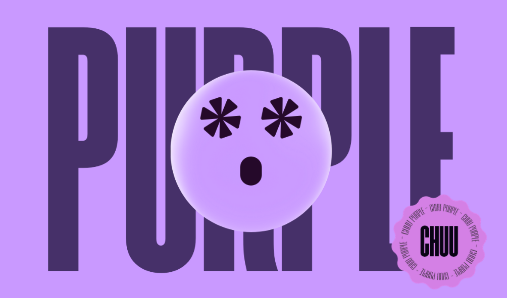

Chuupurple
Chuupurple is a showcase of collective components as a project in a Single-Paged Application (SPA). It serves as the showcase platform where all of website components made by different minds comes together to form a single piece of artwork, this ensures that even if they're made by different people, each components assigned to them will blend cohesively, if not perfectly... then seamlessly.